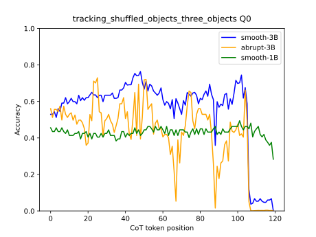
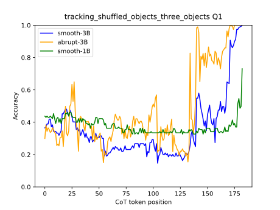
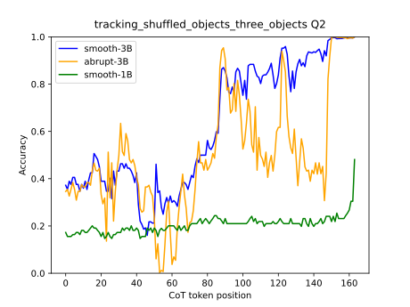
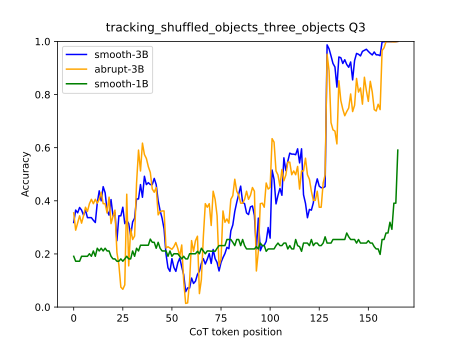
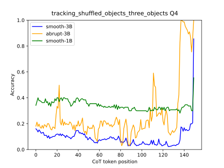
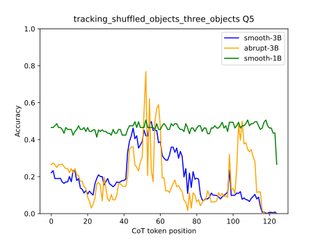
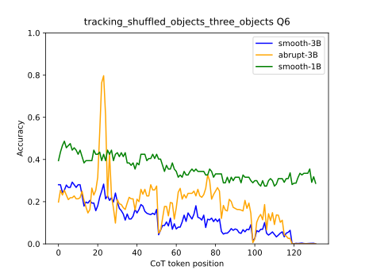
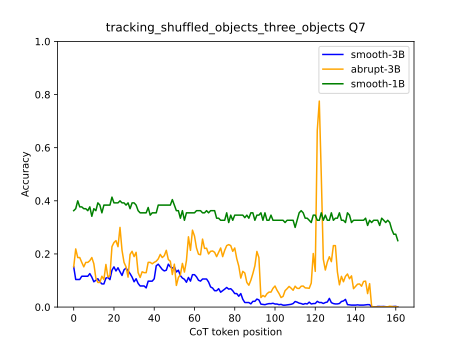
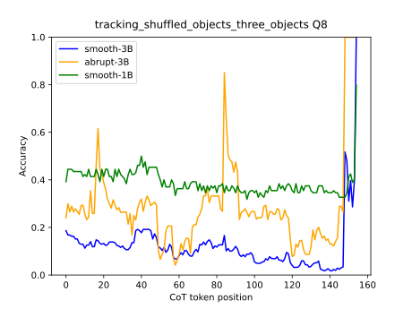
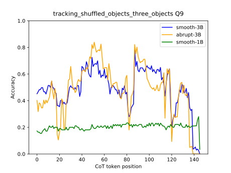

Tracking Shuffled Objects Three Objects Dataset
Question 0
Alice, Bob, and Claire are friends and avid readers who occasionally trade books. At the start of the semester, they each buy one new book: Alice gets Ulysses, Bob gets Frankenstein, and Claire gets Lolita.
As the semester proceeds, they start trading around the new books. First, Claire and Bob swap books. Then, Bob and Alice swap books. Finally, Claire and Bob swap books. At the end of the semester, Bob has
Options:
(A) Ulysses
(B) Frankenstein
(C) Lolita
Correct answer: (B)

Let's break down the sequence of trades:
1. Initially, Alice has Ulysses, Bob has Frankenstein, and Claire has Lolita.
2. Claire and Bob swap books. Now, Claire has Frankenstein and Bob has Lolita.
3. Bob and Alice swap books. Now, Bob has Ulysses and Alice has Lolita.
4. Claire and Bob swap books again. Now, Bob has Lolita and Claire has Ulysses.
At the end of the semester, Bob has Lolita. Therefore, the correct answer is:
ANSWER: C
Question 1
Alice, Bob, and Claire are friends and avid readers who occasionally trade books. At the start of the semester, they each buy one new book: Alice gets Hound of the Baskervilles, Bob gets The Odyssey, and Claire gets Catch-22.
As the semester proceeds, they start trading around the new books. First, Claire and Alice swap books. Then, Bob and Claire swap books. Finally, Alice and Bob swap books. At the end of the semester, Alice has
Options:
(A) Hound of the Baskervilles
(B) The Odyssey
(C) Catch-22
Correct answer: (A)

Let's break down the sequence of trades:
1. Initially:
- Alice has Hound of the Baskervilles
- Bob has The Odyssey
- Claire has Catch-22
2. Claire and Alice swap books:
- Alice now has Catch-22
- Claire now has Hound of the Baskervilles
- Bob still has The Odyssey
3. Bob and Claire swap books:
- Alice still has Catch-22
- Claire now has The Odyssey
- Bob now has Hound of the Baskervilles
4. Alice and Bob swap books:
- Alice now has Hound of the Baskervilles
- Bob now has Catch-22
- Claire still has The Odyssey
So, at the end of the semester, Alice has Hound of the Baskervilles.
ANSWER: A
Question 2
Alice, Bob, and Claire are friends and avid readers who occasionally trade books. At the start of the semester, they each buy one new book: Alice gets Frankenstein, Bob gets Catch-22, and Claire gets Ulysses.
As the semester proceeds, they start trading around the new books. First, Bob and Alice swap books. Then, Alice and Claire swap books. Finally, Claire and Bob swap books. At the end of the semester, Alice has
Options:
(A) Frankenstein
(B) Catch-22
(C) Ulysses
Correct answer: (C)

To solve this problem, let's analyze the sequence of trades:
1. Initially, Alice has Frankenstein, Bob has Catch-22, and Claire has Ulysses.
2. Bob and Alice swap books. Now:
- Alice has Catch-22
- Bob has Frankenstein
- Claire has Ulysses
3. Alice and Claire swap books. Now:
- Alice has Ulysses
- Bob has Frankenstein
- Claire has Catch-22
4. Claire and Bob swap books. Now:
- Alice has Ulysses
- Bob has Catch-22
- Claire has Frankenstein
At the end of the semester, Alice has Ulysses. Therefore, the correct answer is:
ANSWER: C
Question 3
Alice, Bob, and Claire are dancers at a square dance. At the start of a song, they each have a partner: Alice is dancing with Helga, Bob is dancing with Lola, and Claire is dancing with Ophelia.
Throughout the song, the dancers often trade partners. First, Alice and Bob switch partners. Then, Bob and Claire switch partners. Finally, Alice and Bob switch partners. At the end of the dance, Alice is dancing with
Options:
(A) Helga
(B) Lola
(C) Ophelia
Correct answer: (C)

Let's break down the sequence of events step by step:
1. At the start, Alice is dancing with Helga, Bob is dancing with Lola, and Claire is dancing with Ophelia.
2. First, Alice and Bob switch partners. Now, Alice is dancing with Lola, Bob is dancing with Helga, and Claire is still dancing with Ophelia.
3. Then, Bob and Claire switch partners. Now, Alice is still dancing with Lola, Bob is dancing with Ophelia, and Claire is dancing with Helga.
4. Finally, Alice and Bob switch partners. Now, Alice is dancing with Ophelia, Bob is dancing with Lola, and Claire is still dancing with Helga.
At the end of the dance, Alice is dancing with Ophelia.
ANSWER: C
Question 4
Alice, Bob, and Claire are friends and avid readers who occasionally trade books. At the start of the semester, they each buy one new book: Alice gets Frankenstein, Bob gets The Odyssey, and Claire gets Lolita.
As the semester proceeds, they start trading around the new books. First, Alice and Claire swap books. Then, Bob and Alice swap books. Finally, Claire and Bob swap books. At the end of the semester, Bob has
Options:
(A) Frankenstein
(B) The Odyssey
(C) Lolita
Correct answer: (A)

Let's break down the sequence of trades step by step:
1. Initially, Alice has Frankenstein, Bob has The Odyssey, and Claire has Lolita.
2. Alice and Claire swap books. Now:
- Alice has Lolita
- Bob still has The Odyssey
- Claire has Frankenstein
3. Bob and Alice swap books. Now:
- Alice has The Odyssey
- Bob has Lolita
- Claire has Frankenstein
4. Claire and Bob swap books. Now:
- Alice has Lolita
- Bob has Frankenstein
- Claire has The Odyssey
At the end of the semester, Bob has Frankenstein. Therefore, the correct answer is:
ANSWER: A
Question 5
Alice, Bob, and Claire are friends and avid readers who occasionally trade books. At the start of the semester, they each buy one new book: Alice gets Catch-22, Bob gets Moby Dick, and Claire gets The Great Gatsby.
As the semester proceeds, they start trading around the new books. First, Claire and Bob swap books. Then, Claire and Alice swap books. Finally, Bob and Claire swap books. At the end of the semester, Alice has
Options:
(A) Catch-22
(B) Moby Dick
(C) The Great Gatsby
Correct answer: (B)

To solve this problem, let's analyze the sequence of trades:
1. Initially, Alice has Catch-22, Bob has Moby Dick, and Claire has The Great Gatsby.
2. Claire and Bob swap books. Now, Claire has Moby Dick and Bob has The Great Gatsby.
3. Claire and Alice swap books. Now, Claire has Catch-22 and Alice has The Great Gatsby.
4. Bob and Claire swap books. Now, Bob has Catch-22 and Claire has Moby Dick.
At the end of the semester, Alice has The Great Gatsby.
ANSWER: C
Question 6
Alice, Bob, and Claire are dancers at a square dance. At the start of a song, they each have a partner: Alice is dancing with Izzi, Bob is dancing with Melissa, and Claire is dancing with Lola.
Throughout the song, the dancers often trade partners. First, Claire and Alice switch partners. Then, Bob and Claire switch partners. Finally, Alice and Bob switch partners. At the end of the dance, Alice is dancing with
Options:
(A) Izzi
(B) Melissa
(C) Lola
Correct answer: (A)

Let's break down the sequence of events step by step:
1. Initially, Alice is dancing with Izzi, Bob is dancing with Melissa, and Claire is dancing with Lola.
2. Claire and Alice switch partners. Now, Alice is dancing with Lola, and Claire is dancing with Izzi.
3. Bob and Claire switch partners. Now, Bob is dancing with Izzi, and Claire is dancing with Melissa.
4. Alice and Bob switch partners. Now, Alice is dancing with Melissa, and Bob is dancing with Claire.
At the end of the dance, Alice is dancing with Melissa. Therefore, the correct answer is:
ANSWER: B
Question 7
Alice, Bob, and Claire are friends and avid readers who occasionally trade books. At the start of the semester, they each buy one new book: Alice gets The Great Gatsby, Bob gets The Odyssey, and Claire gets Lolita.
As the semester proceeds, they start trading around the new books. First, Alice and Bob swap books. Then, Alice and Claire swap books. Finally, Bob and Claire swap books. At the end of the semester, Claire has
Options:
(A) The Great Gatsby
(B) The Odyssey
(C) Lolita
Correct answer: (A)

Let's break down the sequence of trades:
1. Initially:
- Alice has The Great Gatsby
- Bob has The Odyssey
- Claire has Lolita
2. Alice and Bob swap books:
- Alice now has The Odyssey
- Bob now has The Great Gatsby
- Claire still has Lolita
3. Alice and Claire swap books:
- Alice now has Lolita
- Claire now has The Odyssey
- Bob still has The Great Gatsby
4. Bob and Claire swap books:
- Alice now has The Great Gatsby
- Bob now has The Odyssey
- Claire now has Lolita
At the end of the semester, Claire has Lolita. Therefore, the correct answer is:
ANSWER: C
Question 8
Alice, Bob, and Claire are playing a game. At the start of the game, they are each holding a ball: Alice has a brown ball, Bob has a red ball, and Claire has a white ball.
As the game progresses, pairs of players trade balls. First, Claire and Bob swap balls. Then, Bob and Alice swap balls. Finally, Claire and Alice swap balls. At the end of the game, Bob has the
Options:
(A) brown ball
(B) red ball
(C) white ball
Correct answer: (A)

Let's analyze the situation step by step:
Initially:
- Alice has a brown ball
- Bob has a red ball
- Claire has a white ball
First, Claire and Bob swap balls. This means:
- Claire now has the red ball
- Bob now has the white ball
- Alice still has the brown ball
Then, Bob and Alice swap balls. This means:
- Bob now has the brown ball
- Alice now has the white ball
- Claire still has the red ball
Finally, Claire and Alice swap balls. This means:
- Claire now has the white ball
- Alice now has the red ball
- Bob still has the brown ball
At the end of the game, Bob has the brown ball.
ANSWER: A
Question 9
Alice, Bob, and Claire are playing a game. At the start of the game, they are each holding a ball: Alice has a yellow ball, Bob has a brown ball, and Claire has a green ball.
As the game progresses, pairs of players trade balls. First, Bob and Claire swap balls. Then, Bob and Alice swap balls. Finally, Bob and Claire swap balls. At the end of the game, Alice has the
Options:
(A) yellow ball
(B) brown ball
(C) green ball
Correct answer: (C)

Let's break down the steps of the game:
1. Initially, Alice has a yellow ball, Bob has a brown ball, and Claire has a green ball.
2. First, Bob and Claire swap balls. Now, Bob has the green ball, Claire has the brown ball, and Alice still has the yellow ball.
3. Then, Bob and Alice swap balls. Now, Bob has the yellow ball, Alice has the green ball, and Claire still has the brown ball.
4. Finally, Bob and Claire swap balls. Now, Bob has the brown ball, Alice has the yellow ball, and Claire has the green ball.
At the end of the game, Alice has the yellow ball.
ANSWER: A